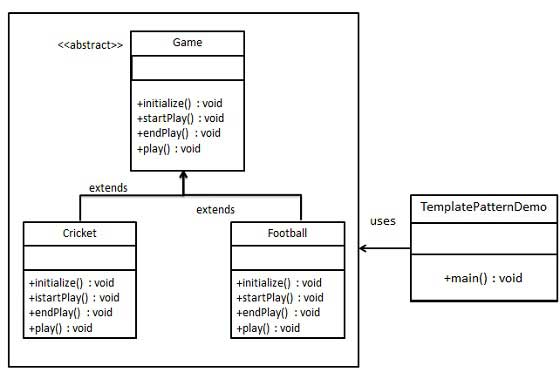

在模板模式（Template Pattern）中，一个抽象类公开定义了执行它的方法的方式/模板。它的子类可以按需要重写方法实现，但调用将以抽象类中定义的方式进行。这种类型的设计模式属于行为型模式。
介绍
意图：定义一个操作中的算法的骨架，而将一些步骤延迟到子类中。模板方法使得子类可以不改变一个算法的结构即可重定义该算法的某些特定步骤。
主要解决：一些方法通用，却在每一个子类都重新写了这一方法。
何时使用：有一些通用的方法。
如何解决：将这些通用算法抽象出来。
关键代码：在抽象类实现，其他步骤在子类实现。
应用实例： 1、在造房子的时候，地基、走线、水管都一样，只有在建筑的后期才有加壁橱加栅栏等差异。 2、西游记里面菩萨定好的 81 难，这就是一个顶层的逻辑骨架。 3、spring 中对 Hibernate 的支持，将一些已经定好的方法封装起来，比如开启事务、获取 Session、关闭 Session 等，程序员不重复写那些已经规范好的代码，直接丢一个实体就可以保存。
优点： 1、封装不变部分，扩展可变部分。 2、提取公共代码，便于维护。 3、行为由父类控制，子类实现。
缺点：每一个不同的实现都需要一个子类来实现，导致类的个数增加，使得系统更加庞大。
使用场景： 1、有多个子类共有的方法，且逻辑相同。 2、重要的、复杂的方法，可以考虑作为模板方法。
注意事项：为防止恶意操作，一般模板方法都加上 final 关键词。
实现
我们将创建一个定义操作的 Game 抽象类，其中，模板方法设置为 final，这样它就不会被重写。Cricket 和 Football 是扩展了 Game 的实体类，它们重写了抽象类的方法。
TemplatePatternDemo，我们的演示类使用 Game 来演示模板模式的用法。

步骤 1
创建一个抽象类，它的模板方法被设置为 final。
Game.java
public abstract class Game {
abstract void initialize();
abstract void startPlay();
abstract void endPlay();
//模板
public final void play(){
//初始化游戏
initialize();
//开始游戏
startPlay();
//结束游戏
endPlay();
}
}
步骤 2
创建扩展了上述类的实体类。
Cricket.java
public class Cricket extends Game {
@Override
void endPlay() {
System.out.println("Cricket Game Finished!");
}
@Override
void initialize() {
System.out.println("Cricket Game Initialized! Start playing.");
}
@Override
void startPlay() {
System.out.println("Cricket Game Started. Enjoy the game!");
}
}
Football.java
public class Football extends Game {
@Override
void endPlay() {
System.out.println("Football Game Finished!");
}
@Override
void initialize() {
System.out.println("Football Game Initialized! Start playing.");
}
@Override
void startPlay() {
System.out.println("Football Game Started. Enjoy the game!");
}
}
步骤 3
使用 Game 的模板方法 play() 来演示游戏的定义方式。
TemplatePatternDemo.java
public class TemplatePatternDemo {
public static void main(String[] args) {
Game game = new Cricket();
game.play();
System.out.println();
game = new Football();
game.play();
}
}
步骤 4
执行程序，输出结果：
Cricket Game Initialized! Start playing.
Cricket Game Started. Enjoy the game!
Cricket Game Finished!
Football Game Initialized! Start playing.
Football Game Started. Enjoy the game!
Football Game Finished!